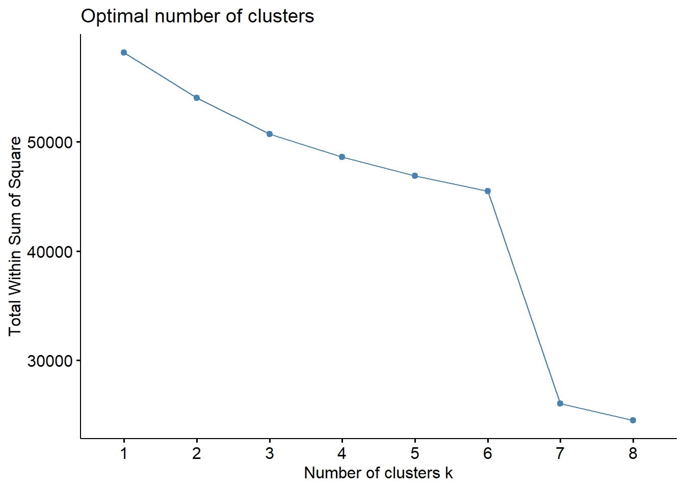
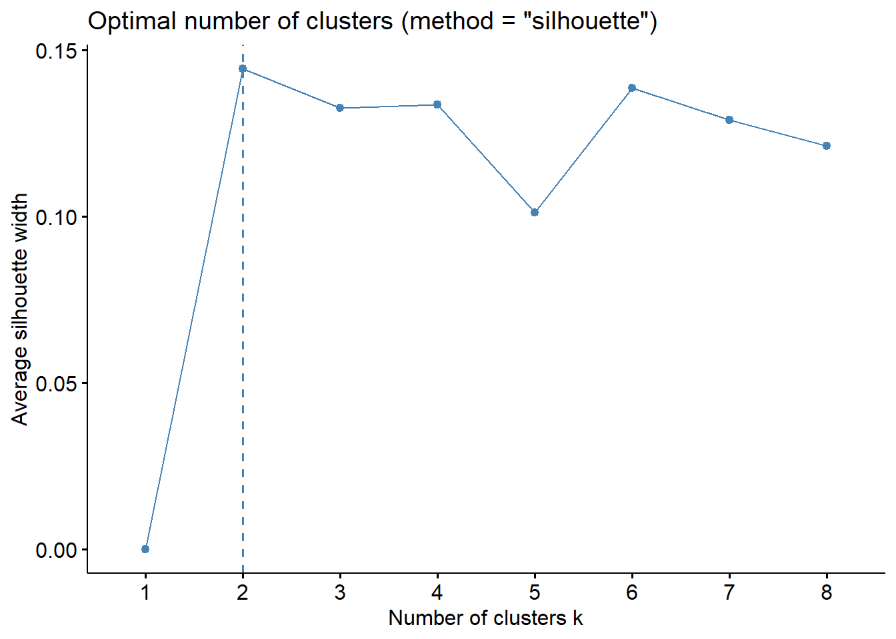
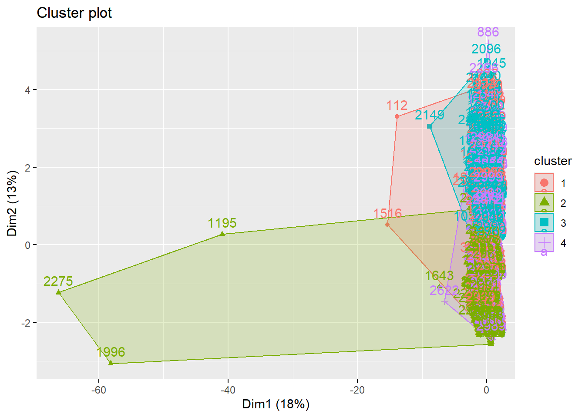
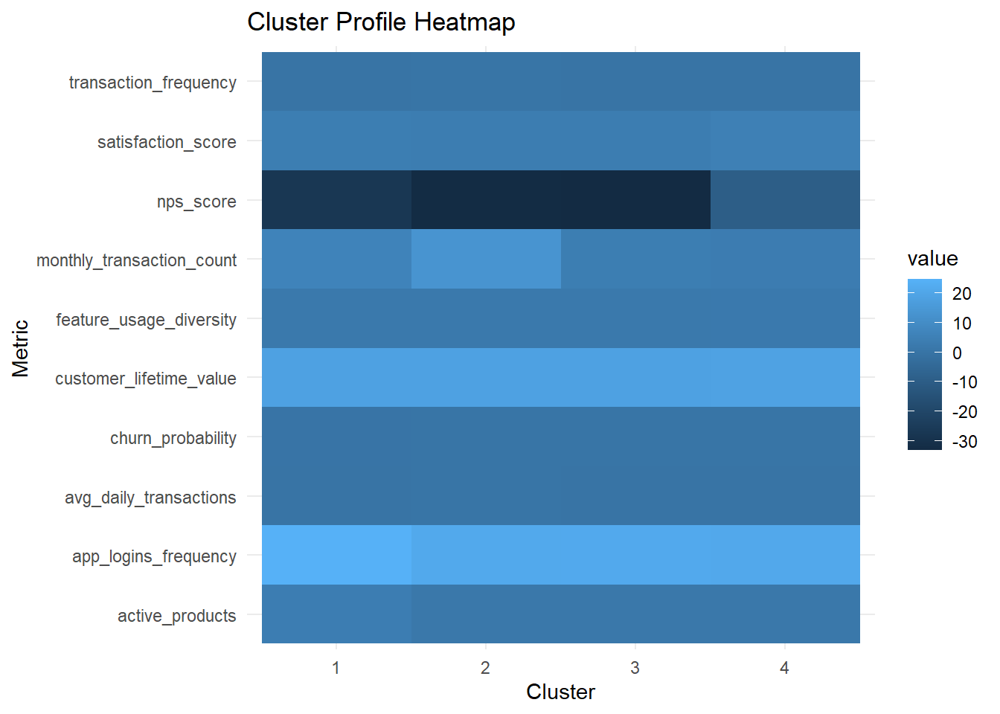

pacman::p_load(
tidyverse,
lubridate,
factoextra,
plotly,
scales,
cluster,
DT,
corrplot,
shiny
)take home exercise 02
Load Packages and Data
customer_data <- read_csv("data/customer_data.csv") Rows: 48723 Columns: 54
── Column specification ────────────────────────────────────────────────────────
Delimiter: ","
chr (13): gender, location, income_bracket, occupation, education_level, ma...
dbl (29): customer_id, age, household_size, active_products, app_logins_fre...
lgl (7): savings_account, credit_card, personal_loan, investment_account, ...
date (5): first_tx, last_tx, last_survey_date, last_transaction_date, first...
ℹ Use `spec()` to retrieve the full column specification for this data.
ℹ Specify the column types or set `show_col_types = FALSE` to quiet this message.Data Pre-processing
cluster_vars <- customer_data %>%
select(
active_products,
app_logins_frequency,
feature_usage_diversity,
monthly_transaction_count,
average_transaction_value,
total_transaction_volume,
transaction_frequency,
weekend_transaction_ratio,
avg_daily_transactions,
support_tickets_count,
resolved_tickets_ratio,
satisfaction_score,
nps_score,
churn_probability,
customer_lifetime_value
)cluster_data <- cluster_vars %>%
mutate(
average_transaction_value = log1p(average_transaction_value),
total_transaction_volume = log1p(total_transaction_volume),
customer_lifetime_value = log1p(customer_lifetime_value),
support_tickets_count = log1p(support_tickets_count)
) %>%
drop_na()cluster_scaled <- scale(cluster_data)Clustering Methodology
Choosing number of clusters
set.seed(1234)
sample_n <- 3000
sample_idx <- sample(seq_len(nrow(cluster_scaled)), sample_n)
cluster_sample <- cluster_scaled[sample_idx, ]
fviz_nbclust(cluster_sample, kmeans, method = "wss", k.max = 8)
fviz_nbclust(cluster_sample, kmeans, method = "silhouette", k.max = 8)
K-means
cluster_input <- customer_data %>%
select(
customer_id,
active_products,
app_logins_frequency,
feature_usage_diversity,
monthly_transaction_count,
average_transaction_value,
total_transaction_volume,
transaction_frequency,
weekend_transaction_ratio,
avg_daily_transactions,
support_tickets_count,
resolved_tickets_ratio,
satisfaction_score,
nps_score,
churn_probability,
customer_lifetime_value
) %>%
mutate(
average_transaction_value_raw = average_transaction_value,
total_transaction_volume_raw = total_transaction_volume,
customer_lifetime_value_raw = customer_lifetime_value,
support_tickets_count_raw = support_tickets_count,
average_transaction_value = log1p(average_transaction_value),
total_transaction_volume = log1p(total_transaction_volume),
customer_lifetime_value = log1p(customer_lifetime_value),
support_tickets_count = log1p(support_tickets_count)
) %>%
drop_na()
set.seed(1234)
cluster_sample <- cluster_input %>%
slice_sample(n = 3000)
cluster_scaled <- scale(cluster_sample %>% select(
active_products,
app_logins_frequency,
feature_usage_diversity,
monthly_transaction_count,
average_transaction_value,
total_transaction_volume,
transaction_frequency,
weekend_transaction_ratio,
avg_daily_transactions,
support_tickets_count,
resolved_tickets_ratio,
satisfaction_score,
nps_score,
churn_probability,
customer_lifetime_value
))
km_res <- kmeans(cluster_scaled, centers = 4, nstart = 25)
clustered_df <- cluster_sample %>%
mutate(cluster = factor(km_res$cluster))PCA cluster map
fviz_cluster(km_res, data = cluster_sample)
clustered_sample_df <- cluster_input[sample_idx, ] %>%
mutate(cluster = factor(km_res$cluster))Cluster summary table
cluster_summary <- clustered_df %>%
group_by(cluster) %>%
summarise(
n = n(),
active_products = mean(active_products, na.rm = TRUE),
monthly_transaction_count = mean(monthly_transaction_count, na.rm = TRUE),
total_transaction_volume = mean(total_transaction_volume_raw, na.rm = TRUE),
satisfaction_score = mean(satisfaction_score, na.rm = TRUE),
churn_probability = mean(churn_probability, na.rm = TRUE),
customer_lifetime_value = mean(customer_lifetime_value_raw, na.rm = TRUE)
)
DT::datatable(cluster_summary)Cluster profile heatmap
cluster_profile <- clustered_df %>%
group_by(cluster) %>%
summarise(
across(
c(active_products,
app_logins_frequency,
feature_usage_diversity,
monthly_transaction_count,
transaction_frequency,
avg_daily_transactions,
satisfaction_score,
nps_score,
churn_probability,
customer_lifetime_value),
mean
)
) %>%
pivot_longer(-cluster, names_to = "metric", values_to = "value")
ggplot(cluster_profile, aes(x = cluster, y = metric, fill = value)) +
geom_tile() +
labs(
title = "Cluster Profile Heatmap",
x = "Cluster",
y = "Metric"
) +
theme_minimal()
UI design
The proposed user interface is designed to support interactive exploration of customer clusters in a simple and structured manner. Since the purpose of the prototype is to demonstrate the feasibility of the cluster analysis module for the future Shiny application, the interface focuses on allowing users to control the clustering settings and inspect the resulting customer segments through multiple coordinated outputs.
The layout is organised into two main areas: a sidebar panel for input controls and a main panel for analytical outputs. The sidebar panel is intended to contain the key parameters that influence the clustering process. These include the selection of feature groups, the number of clusters, and the option to include or exclude retention-related indicators such as churn probability and satisfaction measures. This arrangement allows users to experiment with different clustering configurations without overwhelming the main analytical space.
The main panel is designed to present the clustering results in a clear and progressive sequence. The first output section shows the cluster selection diagnostics, such as the elbow plot and silhouette plot, so that users can evaluate different cluster solutions. The second section displays a cluster map based on principal component analysis, which helps users visually assess the separation between clusters. The third section presents a cluster profile comparison, such as a heatmap or grouped summary chart, to highlight the behavioural and transactional characteristics of each cluster. The final section contains a summary table that reports the size and key statistics of each cluster for detailed inspection.
Several Shiny UI components are appropriate for this module. A checkboxGroupInput() can be used to allow users to select one or more feature groups for clustering, such as engagement, transaction behaviour, and experience or retention variables. A sliderInput() is suitable for specifying the number of clusters because it provides an intuitive way to test different values of kkk. A checkboxInput() can be used to control whether retention-related variables are included in the clustering process. For the outputs, plotOutput() or plotlyOutput() can be used for the diagnostic plots and cluster map, while DTOutput() is suitable for presenting the cluster summary table in an interactive and readable format.
This UI design is intended to balance flexibility and interpretability. The controls are limited to a small number of meaningful parameters so that users can focus on analytical exploration rather than technical complexity. At the same time, the combination of diagnostic plots, cluster visualisation, profile comparison, and tabular summaries ensures that the clustering results can be interpreted from multiple perspectives. Overall, the proposed design is suitable for integration into the future group Shiny application as a dedicated customer segmentation module.